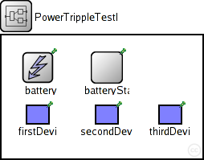
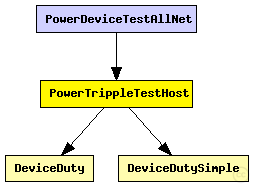

This documentation is released under the Creative Commons license
This documentation is released under the Creative Commons licenseEmpty host with three devices for simple power test.
The following diagram shows usage relationships between types. Unresolved types are missing from the diagram. Click here to see the full picture.
The following diagram shows inheritance relationships for this type. Unresolved types are missing from the diagram. Click here to see the full picture.

| Name | Type | Description |
|---|---|---|
| PowerTestNode | compound module | (no description) |
| Name | Type | Description |
|---|---|---|
| PowerDeviceTestAllNet | network |
Combines PowerDeviceTestMultiNet and PowerDeviceTestAllNet. Uses three instances of the DeviceDuty and DeviceDutySimple devices, one of which has no continuous CURRENT draw, only discrete ENERGY draw from the Battery. |
| Name | Value | Description |
|---|---|---|
| display | bgb=250,153,$color;bgp=10,10 |
| Name | Type | Default value | Description |
|---|---|---|---|
| battery.debug | bool | false | |
| battery.nominal | double |
nominal battery capacity |
|
| battery.capacity | double |
battery capacity |
|
| battery.voltage | double |
nominal voltage |
|
| battery.resolution | double |
capacity is updated at least every resolution time |
|
| battery.publishDelta | double |
if > 0, capacity is published to the BB each publishTime interval |
|
| battery.publishTime | double |
number of modules that will draw energy from the battery |
|
| battery.numDevices | int | 1 | |
| batteryStats.notAffectedByHostState | bool | true | |
| batteryStats.debug | bool | false | |
| batteryStats.detail | bool | true |
write per-activity and per-device statistics to omnetpp.sca (if false, only total energy and lifetime are written) |
| batteryStats.timeSeries | bool | false |
subscribe to battery status and record time series data in omnetpp.vec (resolution depends on battery's publishDelta) |
| firstDevice.debug | bool | false | |
| firstDevice.period | double | ||
| firstDevice.dutyCycle | double | ||
| firstDevice.current | double | ||
| firstDevice.wakeup | double | ||
| secondDevice.debug | bool | false | |
| secondDevice.period | double | ||
| secondDevice.dutyCycle0 | double | ||
| secondDevice.current0 | double | ||
| secondDevice.gap | double | ||
| secondDevice.dutyCycle1 | double | ||
| secondDevice.current1 | double | ||
| secondDevice.wakeup | double | ||
| thirdDevice.debug | bool | false | |
| thirdDevice.period | double | ||
| thirdDevice.dutyCycle | double | ||
| thirdDevice.current | double | ||
| thirdDevice.wakeup | double |
// Empty host with three devices for simple power test. module PowerTrippleTestHost extends PowerTestNode { parameters: @display("bgb=250,153,$color;bgp=10,10"); battery.numDevices = 3; submodules: firstDevice: DeviceDutySimple { parameters: @display("p=45,98;b=30,25"); } secondDevice: DeviceDuty { parameters: @display("p=131,98;b=30,25"); } thirdDevice: DeviceDutySimple { parameters: @display("p=210,98;b=30,25"); } }
This documentation is released under the Creative Commons license